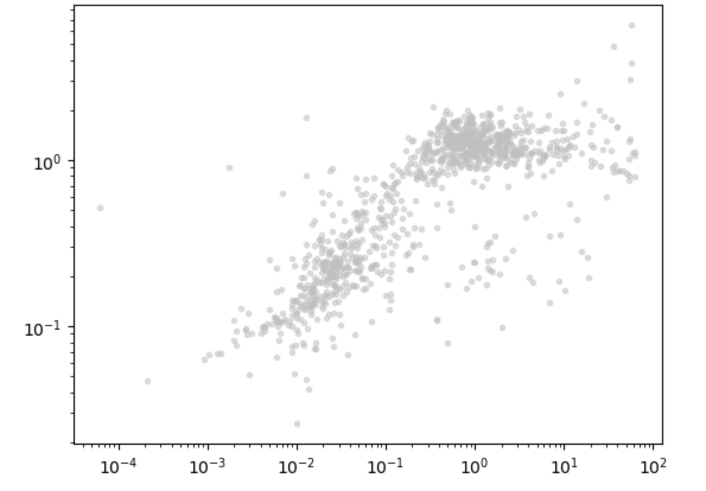
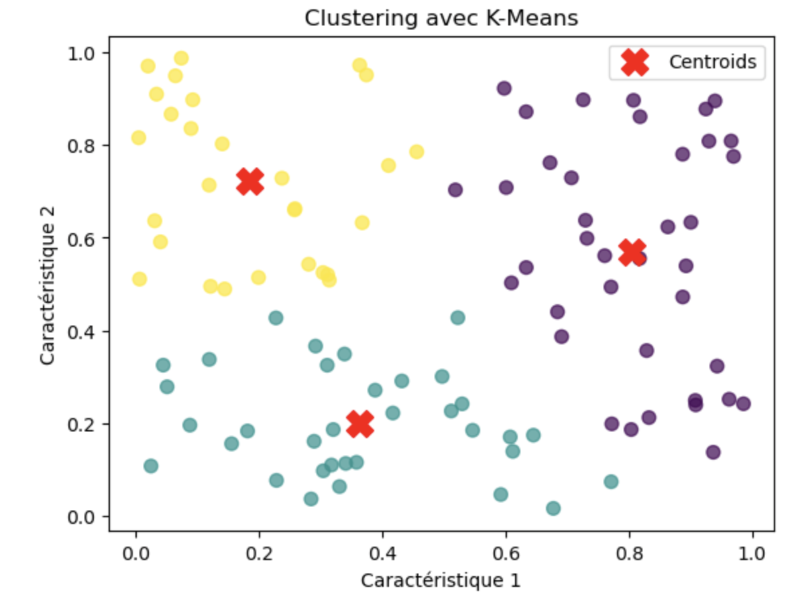
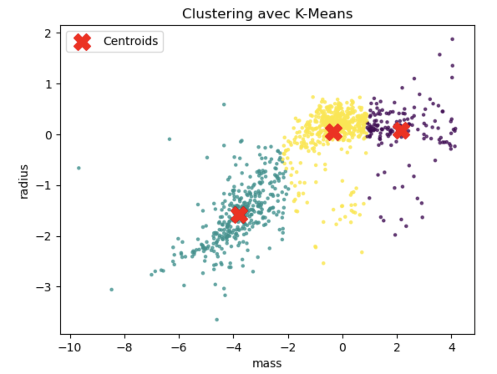
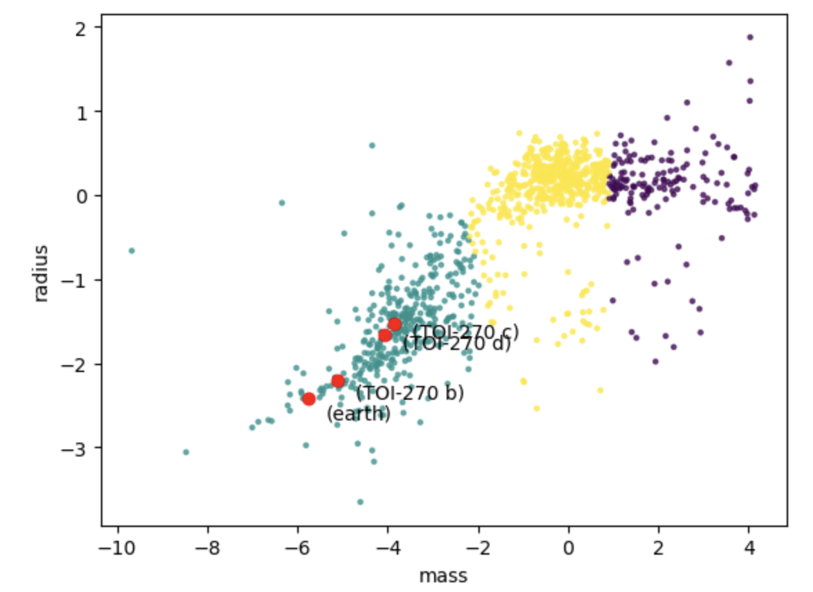

Scikit-learn est une bibliothèque libre Python destinée à l’apprentissage automatique. Cette bibliothèque propose une série d’outils pour l’étude des données en table comme:
la regression linéaire
la classification
le clustering
…
Nous allons utiliser cette bibliothèque pour rechercher des dépendances entre les données des exoplanètes connues. Le travail de représentation graphique nous a montré que ces planètes se regroupent en clusters sur les diagrammes en nuages de points. (echelle log).
Scikit-learn va nous aider à determiner des classes d’exoplanètes (tellurique, gazeuse, similaire aux étoiles). Nous rappelons que la table dataset.csv contient les données des exoplanètes, de leurs étoiles, ainsi que les données ajoutées (Terre et système TOI_270).
Vous pouvez télécharger le dossier complet ici: sources.zip, contenant:
le fichier de dependances requirment.txt
la table dataset.csv
le notebook intro_IA.ipynb
Prérequis: Ce notebook demande d’être familiarisé avec les types np.array, et pandas.dataframe.
Apprentissage non supervisé
Les classes des astres ne sont pas renseignés dans la table dataset.csv. Pourtant, il apparait évident que ces astres se regroupent en amas, donc certainement en familles.

radius - mass en echelle log. Données issues du fichier dataset.csv
Le principe de la recherche de cluster par scikit-learn utilise la fonction kmeans de recherche de plus proches voisins. Elle peut être testé avec le script minimum ci-dessous:
importnumpyasnpfromsklearn.clusterimportKMeansimportmatplotlib.pyplotasplt# Génération de données aléatoires (non étiquetées)np.random.seed(42)data=np.random.rand(100,2)# 100 points avec 2 caractéristiques# Création et entraînement du modèle K-Meanskmeans=KMeans(n_clusters=3,random_state=42)# 3 clusterskmeans.fit(data)# Récupération des résultatslabels=kmeans.labels_# Les clusters attribués à chaque pointcentroids=kmeans.cluster_centers_# Les centres des clusters# Visualisation des clustersplt.scatter(data[:,0],data[:,1],c=labels,cmap='viridis',s=50,alpha=0.7)plt.scatter(centroids[:,0],centroids[:,1],c='red',marker='X',s=200,label='Centroids')plt.title("Clustering avec K-Means")plt.xlabel("Caractéristique 1")plt.ylabel("Caractéristique 2")plt.legend()plt.show()

exemple de resultat donné par la recherche de clusters (données aléatoires)
La fonction kmeans utilise l’algorithme de LLoyd. La recherche d’un centre de cluster (centroïd) pourrait se faire par recherche exhaustive, mais alors, la complexité serait très importante et le temps de calcul rapidement divergent avec le nombre de points. Dans cet algorithme, la recherche est basée sur un algorithme glouton. Celui-ci va chercher à minimiser une grandeur appelée inertie, qui est calculée comme la distance du centroïd à ses voisins. Enfin, les points sont segmentés en plusieurs clusters, tels que la variance est à peu près identique pour le calcul de l’inertie.
Données de la table dataset.csv
Comme dans l’activité précédente: importer les données de la table:
df_reduit=df[['mass','radius','_name']]df_reduit=df_reduit.dropna()# echelle log# rappel: les données sont normalisées par rapport à Jupiterx=np.log(df_reduit['mass'])y=np.log(df_reduit['radius'])L=[]forx,yinzip(x,y):L.append([x,y])L[:10]# Affichage --------------------[[-5.761407122499511,-2.409803828596342],[-4.567874401244395,-2.4079456086518722],[-5.0206856299497575,-2.4079456086518722],[-5.506572305368496,-2.406835114367845],[-5.8781358618009785,-2.419118909249997],[-3.101092789211817,-2.419118909249997],[-6.16581793425276,-2.372685720673535],[-5.4398809308698235,-2.3622289459215606],[-5.910806644090528,-2.3580978029243043],[-3.669469060594113,-2.4651040224918206]]# ------------------------------
Recherche de cluster par apprentissage automatisé (Kmean: recherche des plus proches voisins)
importnumpyasnpfromsklearn.clusterimportKMeansimportmatplotlib.pyplotasplt# données (non étiquetées)data=np.array(L)# Création et entraînement du modèle K-Meanskmeans=KMeans(n_clusters=3,random_state=50)# 3 clusterskmeans.fit(data)# Récupération des résultatslabels=kmeans.labels_# Les clusters attribués à chaque pointcentroids=kmeans.cluster_centers_# Les centres des clusters# Visualisation des clustersplt.scatter(data[:,0],data[:,1],c=labels,cmap='viridis',s=5,alpha=0.7)plt.scatter(centroids[:,0],centroids[:,1],c='red',marker='X',s=200,label='Centroids')plt.title("Clustering avec K-Means")plt.xlabel('mass')plt.ylabel('radius')plt.legend()plt.show()

segmentation en 3 clusters
On peut alors vérifier la valeur donnée aux 3 étiquettes (classes)
, ainsi que le nombre d’items dans chaque classe:
Superposer les exoplanètes de TOI_270 et celles de la Terre
Selection des planètes TOI_270 ainsi que la Terre dans la table dataset.csv:
names=['TOI-270 d','TOI-270 b','TOI-270 c','earth']df_p=df[df['_name'].isin(names)]"""nuage de points df_p issu des observations
"""x_p=np.log(df_p['mass'])y_p=np.log(df_p['radius'])z_p=df_p['_name']
Superposition des données de df_p:
plt.clf()axes=plt.gca()# data et labels sont calculés plus haut plt.scatter(data[:,0],data[:,1],c=labels,cmap='viridis',s=5,alpha=0.7)plt.scatter(x_p,y_p,color='red',marker='o')forx0,y0,z0inzip(x_p,y_p,z_p):axes.text(x0+0.4,y0*1.1,f"({z0})",fontsize=10)plt.xlabel('mass')plt.ylabel('radius')plt.show()

superposition des planètes du système TOI_270 et de la Terre
Prévision des classes pour les planètes de TOI_270
Prediction pour la planète Jupiter
Documentation: La fonction Kmeans du module scikit-learn
# reduction du tableau aux 2 colonnes masse et rayoncouples_xp_yp=Liste[:,:2]# predictionkmeans.predict(couples_xp_yp)# Affichage --------------------array([1,1,1,1],dtype=int32)# ------------------------------
Comme attendu d’après le graphique précedent, les 4 planètes du tableau df_p sont de classe 1. (cluster vert)